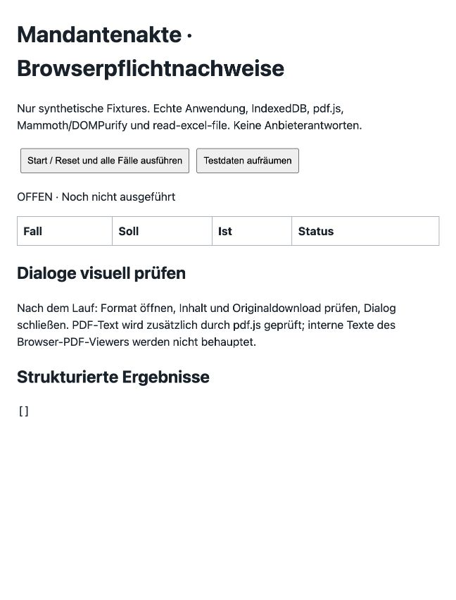
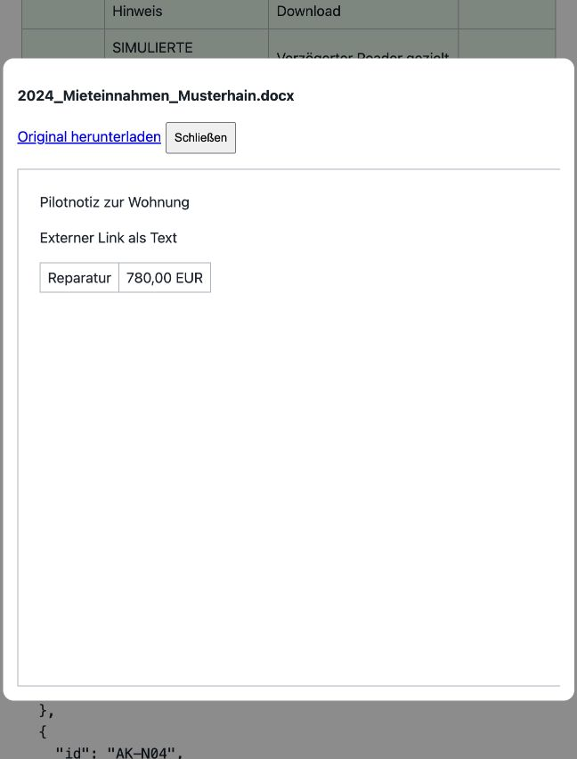
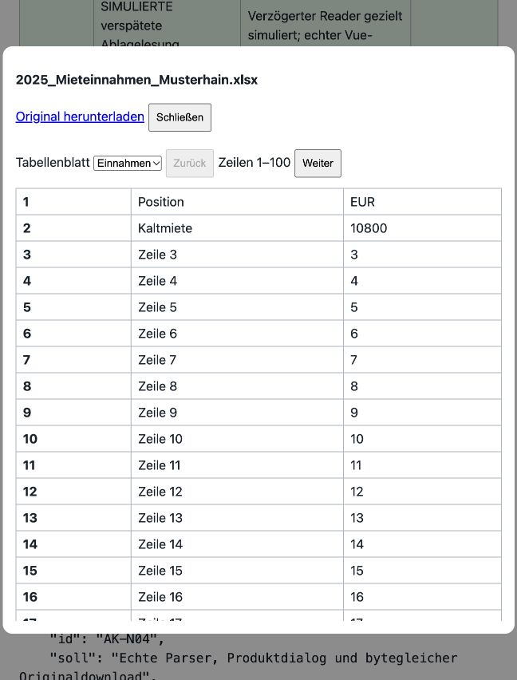
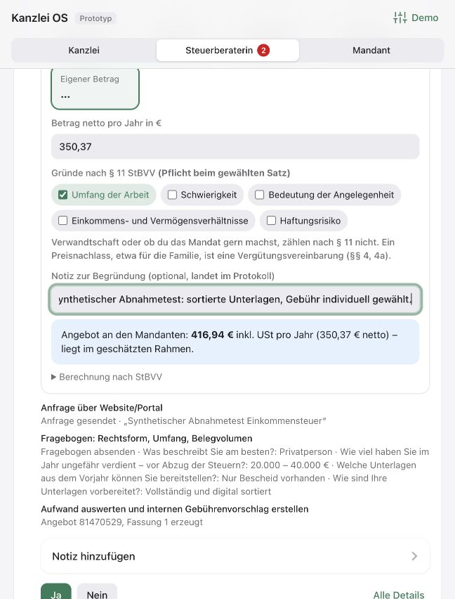

← Skilltree und Go-Live-Übersicht
22 / 22 lokale Arbeitspakete · bereit für fachliche Tests
Stand: 15. November 2026. Geprüfter Code- und Teststand: 5458f73 auf codex/lokale-abnahme-20261115. Der vorherige Arbeitsstand wurde als 9bf4681 gesichert; die Änderungen des separat abgenommenen 20er-Standes 87baf51 gegenüber 59679e4 sind integriert. Dieser Bericht dokumentiert die lokale Abnahme; die Pages-Veröffentlichung vom 16.11. ist separat dokumentiert.
| Prüfung | Ergebnis | Protokoll |
|---|---|---|
| Projektprüfung, Typen, Lint, Architektur, Tests | 1.527 Tests / 44 Dateien bestanden | Qualität |
| Produktionsbuild | Erfolgreich | Build |
| Lokale Orchestrierungswerkzeuge | 78 Tests bestanden | Python-Tests |
| Echter Browser / IndexedDB / Originaldateien | 11 Fälle bestanden | Browserprotokoll |
| Neue realistische Testakten: fünf Lohnbescheinigungen | Alle Lohn-/Steuer-/KV-/PV-/RV-/AV-Werte aus echten PDFs korrekt gelesen | Parserprüfung |
| PDF-Testakten | 68 Belege + 5 vollständige Scanvarianten, 100 Seiten | Inhalt · Layout |
| Mietobjekte und Onboarding | Zusätzlich manuell über die Oberfläche geprüft | Objekte · Onboarding |
Die Browserprüfung deckt PDF, DOCX und XLSX mit echten Parsern, Originaldownload, Neuladen, beschädigte Office-Dateien und fehlende Originale ab. Im ESt-Fall wurden zwei Mietobjekte angelegt, ein OCR-Beleg zugeordnet und beide Objekte nach Neuladen wiedergefunden. Im Onboarding wurden die Aufwandsfragen vor der Kanzlei-Gebührenentscheidung beantwortet und ein individueller Nettobetrag von 350,37 € angenommen.
npm run dev -- --port 5174 --host 127.0.0.1 starten.Automatische Prüfungen: npm run check, npm run build, python3 -m unittest discover -s scripts/herder/tests. PDF-Erstellung: scripts/erzeuge-est-testszenarien.py mit Python und ReportLab/Pillow/pypdf. Alle 84 Text-PDF-Seiten wurden gerendert, auf Überläufe geprüft und über Kontaktbögen gesichtet; die Scanvariante zusätzlich exemplarisch.
Die neuen realistischen Testakten (mit Sollwerten, Beleginventar und Quellenrecherche) liegen im Projekt unter output/pdf/est-testszenarien-2025. Die Standard-PDFs und Scanvarianten nicht gleichzeitig als zwei Originale hochladen.



